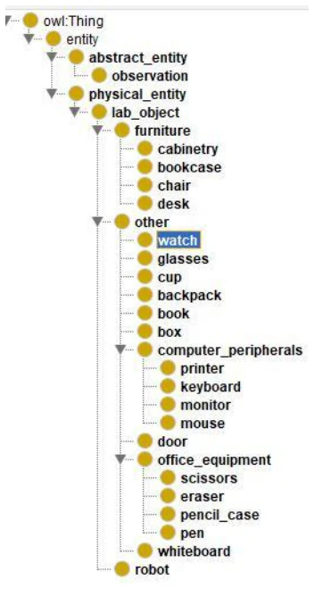
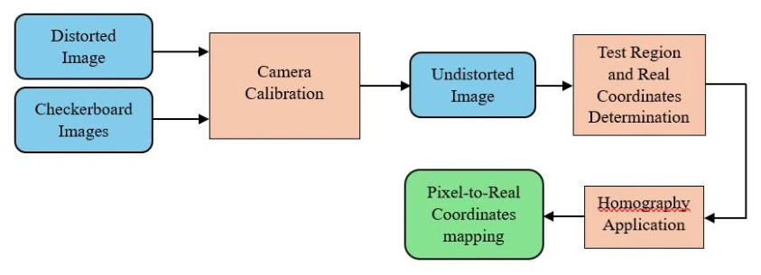
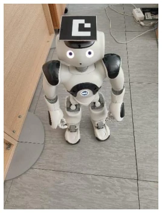
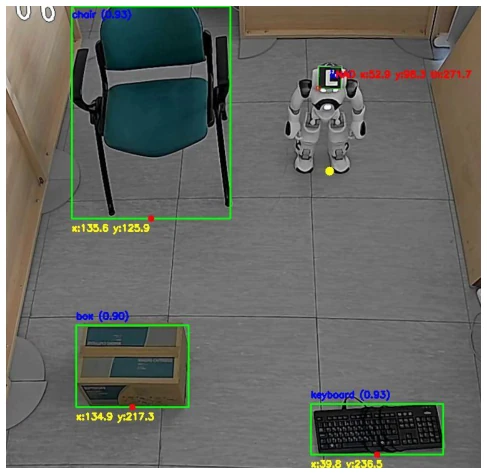

A hybrid pipeline for dynamic ontology-based semantic mapping
Konstantinos Dimitropoulos, Ioannis Hatzilygeroudis abspdf
论文点评Review
这篇论文搞了个“混合管道”，把老派的单目几何映射（Homography）和新兴的语义本体（Ontology）硬凑在一起。亮点在于用线性回归修正坐标误差，这招挺实在，毕竟单目测距误差大是常识。但槽点也不少：依赖外部固定摄像头，这算“具身”吗？感觉更像是“监控下的机器人”。而且只做了 2D 映射，在 3D 语义建图卷成麻花的今天，显得有点复古。不过，动态更新本体库并推理“邻近关系”确实比静态知识库强，适合特定实验室场景。总的来说，是个工程上很扎实但理论创新略显保守的方案，适合需要低成本语义理解的场景，别指望它能直接上街。
This paper proposes a 'hybrid pipeline' that integrates traditional monocular geometric mapping (Homography) with emerging semantic ontologies. The highlight lies in using linear regression to correct coordinate errors, a pragmatic approach given that large monocular ranging errors are common knowledge. However, there are significant drawbacks: reliance on external fixed cameras raises the question of whether this counts as 'embodied'; it feels more like a 'robot under surveillance'. Moreover, only 2D mapping is performed, which appears somewhat retrograde in today's highly complex 3D semantic mapping landscape. However, dynamically updating the ontology library and inferring 'proximity relationships' is indeed superior to static knowledge bases, suitable for specific laboratory scenarios. Overall, it is a solution that is very solid in engineering but slightly conservative in theoretical innovation, suitable for scenarios requiring low-cost semantic understanding, though one should not expect it to operate directly on public streets.
研究动机Motivation
机器人要在复杂环境里干活，光有几何地图（SLAM）不够，得懂物体和关系 [1]-[5]。现有语义映射系统虽然融合了感知，但往往缺乏推理机制，或者知识库是静态的，无法随环境动态变化 [11]-[15]。比如有些系统用场景图，但推理能力有限；有些本体库虽然结构清晰，但更新滞后。本文作者指出，需要一种能结合先验知识（如本体）并支持实时感知的动态更新机制，以便机器人能理解环境实体及其关系，而不仅仅是定位。特别是针对实验室等结构化环境，现有的 3D 语义建图（如 [16], [17]）可能过于复杂，而简单的 2D 方案又缺乏语义深度，因此提出这种混合管道来平衡效率与语义理解。
Robots operating in complex environments require more than geometric maps (SLAM); they must understand objects and relationships [1]-[5]. Although existing semantic mapping systems integrate perception, they often lack reasoning mechanisms, or possess static knowledge bases unable to dynamically adapt to environmental changes [11]-[15]. For instance, some systems utilize scene graphs but have limited reasoning capabilities; while some ontologies feature clear structures, their updates lag. The authors point out the need for a dynamic update mechanism combining prior knowledge (e.g., ontologies) and supporting real-time perception, enabling robots to understand environmental entities and their relationships beyond mere localization. Particularly for structured environments like laboratories, existing 3D semantic mapping (e.g., [16], [17]) may be overly complex, whereas simple 2D schemes lack semantic depth; thus, this hybrid pipeline is proposed to balance efficiency and semantic understanding.

Fig.1 Part of the ontology
方法Method
整体流程是“外部视角 + 本体驱动”。首先用 PoE 摄像头采集视频，经 OpenCV 去畸变后，通过单应性矩阵（Homography）将像素坐标转为世界坐标。机器人定位靠头上的 ArUco 标记，物体检测用 YOLOv11s。核心创新在于坐标修正：直接用校准值误差大，所以训练了线性回归模型（LR）分别修正 X 和 Y 轴，显著降低了 MAE。本体部分用 Protégé 构建，包含物理实体和抽象观察，支持动态更新（坐标、邻近关系）。系统每 5 秒更新一次，通过阈值判断物体移动或消失，并实时计算“is_near_to”关系。这比单纯存点更灵活，能支持基于规则的推理。
The overall workflow is 'external perspective + ontology-driven'. First, video is captured using a PoE camera, undistorted via OpenCV, and pixel coordinates are converted to world coordinates through a Homography matrix. Robot localization relies on ArUco markers on the robot's head, while object detection utilizes YOLOv11s. The core innovation lies in coordinate correction: since direct calibration values yield large errors, a Linear Regression (LR) model was trained to correct the X and Y axes separately, significantly reducing MAE. The ontology is constructed using Protégé, encompassing physical entities and abstract observations, supporting dynamic updates (coordinates, proximity relationships). The system updates every 5 seconds, determining object movement or disappearance via thresholds, and calculating 'is_near_to' relationships in real-time. This is more flexible than merely storing points and supports rule-based reasoning.

Fig.4 Camera calibration process flowchart

Fig.5 NAO robot and the marker on its head

Fig.6 Object detection.
实验Experiments
在 180x240cm 实验室区域测试，对比真实坐标与估计坐标。初始单目 + 单应性估计误差较大，物体 X 轴 MAE 5.3cm，Y 轴 17.8cm，机器人 Y 轴甚至达 28.1cm。引入线性回归修正后，物体坐标 MAE 降至 2.7cm/8.5cm，机器人坐标 MAE 降至 1.57cm，满足<3cm 的目标。测试集未见数据表现更好。消融实验显示 LR 模型泛化性良好（R2>0.99）。不过实验局限于静态物体和特定视角，未测试动态遮挡或复杂光照下的鲁棒性。
Testing was conducted in an 180x240cm laboratory area, comparing real coordinates with estimated coordinates. The initial monocular + homography estimation error was significant, with Object X-axis MAE at 5.3cm, Y-axis at 17.8cm, and Robot Y-axis reaching even 28.1cm. After introducing linear regression correction, Object coordinate MAE decreased to 2.7cm/8.5cm, and Robot coordinate MAE decreased to 1.57cm, meeting the <3cm target. Unseen data in the test set performed better. Ablation experiments demonstrated that the LR model has good generalization (R2>0.99). However, the experiments were limited to static objects and specific viewpoints, without testing robustness under dynamic occlusion or complex lighting conditions.